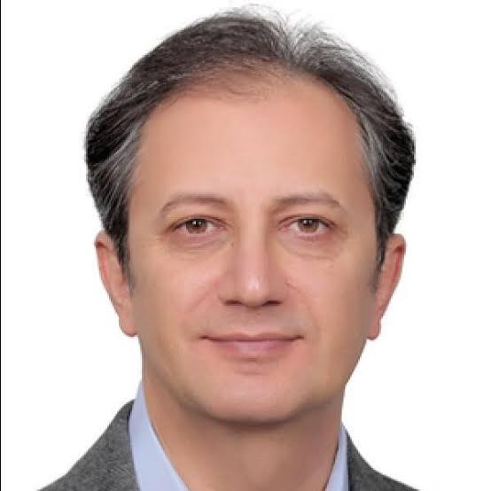
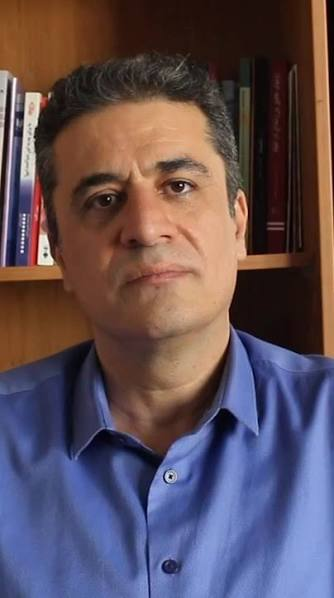

به سخنان متخصصان حوزه سلامت، روانشناسی و پیشگیری از آسیبهای اجتماعی گوش دهید.
دکتر کامران صحت
مهارت نه گفتن

دکترسعید ممتازی
پیشگیری از اعتیاد در نوجوانان

دکتر نارنجی ها
نقش خانواده در آگاهی نوجوانان
پیام همراه نوجوان
گاهی شنیدن یک توصیه درست از زبان یک متخصص،
میتواند مسیر زندگی ما را تغییر دهد.
به صحبتهای متخصصان گوش دهید و آنها را با دوستان و خانواده خود به اشتراک بگذارید.